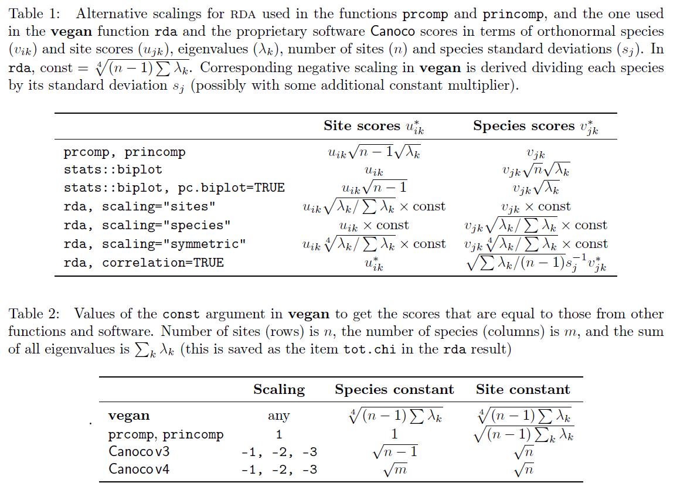
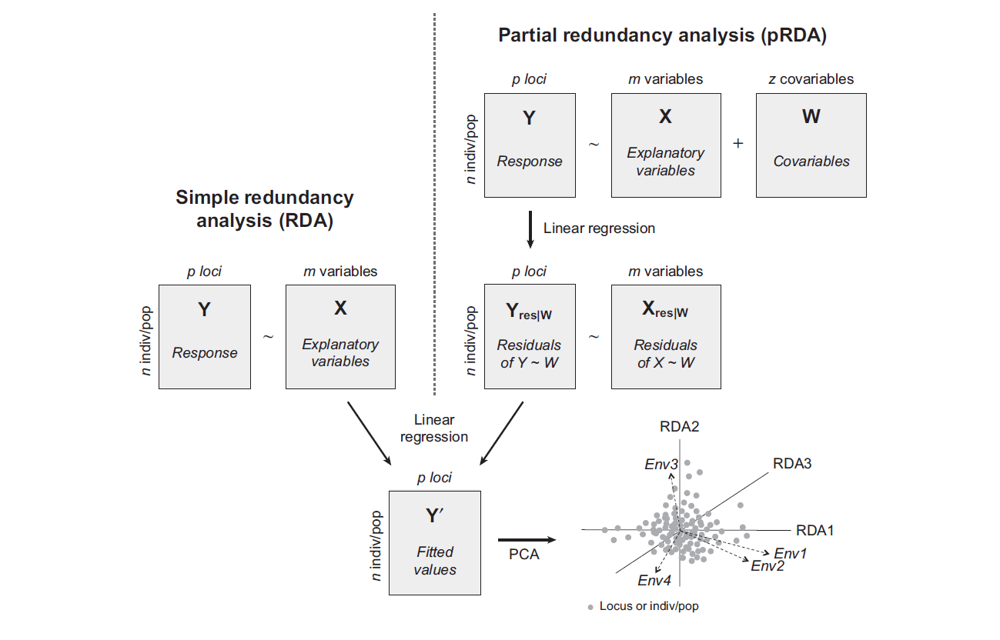
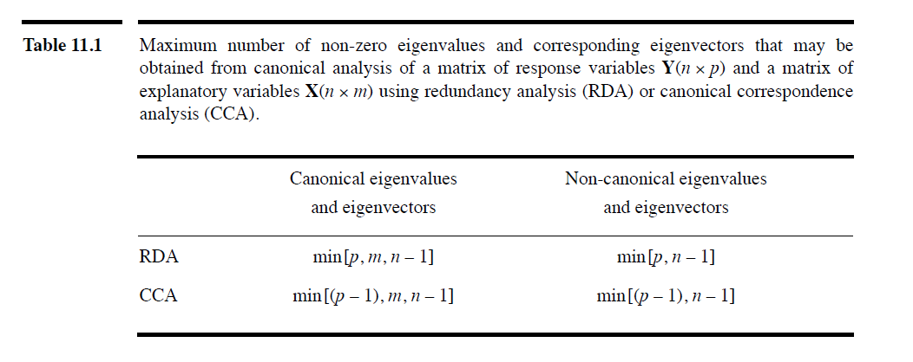

Ordination
生物信息中常用的数据降维方法
| -- | Raw | Raw | Transformation-based | Distance-based |
|---|---|---|---|---|
| Assumption | Linear | Unimodal | -- | -- |
| Unconstrained L or D only |
PCA | CA, DCA | tb-PCA | PCoA, NMDS |
| Constrained plus R/Q |
RDA | CCA | tb-RDA | db-RDA |
| -- | -- | 通过 DCA 第一轴轴长，选择 Unimodal（> 4 SD）或 Linear（< 3 SD）方法 | 一般用 Hellinger 处理后的数据作为输入 | -- |
{kind=link}
Recall: 特征值分解（Eigen）、奇异值分解（SVD）、QR分解 请参考Linear_Algebra笔记-常见矩阵分解
Vegan 是R中比较常用的生态学统计包
参考：Man pages for vegan，FAQ-vegan，Scale.pdf，数据标准化方法，scores()，library(vegan)
browseVignettes("vegan") ##查看doc
## 随后可对原始物种分布矩阵进行预处理：（centered, standardized, transformed, normalized）
## standardized: decostand() scale()
## transformed: sqrt() log() log10() log1p()
## scaling：options "sites", "species", "symmetric" defines the set of scores which is scaled by eigenvalues
## const：set the numeric scaling constant to non-default values
## correlation can be used to modify species scores so that they show the relative change of species abundance, or their correlation with the ordination. This is no longer a biplot scaling.
scores(res, choices = 1:2, display='both') ## 2列，"sites" or "species" or "both"/"all" or ...
summary(crda,scaling=0,axes=2)$species ## 2列，不scale

Data
| Matrix Type | -- | 说明 |
|---|---|---|
| Raw | L = sample $\times$ species | -- |
| Raw | R = sample $\times$ environmental variables | -- |
| Raw | Q = species $\times$ traits | -- |
| Distance | D = sample $\times$ sample | -- |
- 填充/删除 缺失值
- 去除 Outliers，一般指超出 Q1/Q3 1.5 IQR（箱式图）
- Transformation：
- 常见 sqrt()，log()，Arcsin()，取倒数，Hellinger $\sqrt{\frac{y_{ij}}{rowsum_i}}$
- Standardization：
- 常见 Centring to 0，z-scores $\frac{y_{ij}-mean}{sd}$，Ranging to 0~1
PCA
（主成分分析: 如果一个特征的方差很大，则说明这个特征上带有大量的信息）参考1,参考2,参考3
- 矩阵数据 $A_{m \times n}$：m_Sample，n_Feature
- 对 $A^TA \in R^{n \times n}$ 进行特征值分解，得到$n$组特征值与特征向量 $(\lambda_i \in R,\vec{v_i}\in R^{n})$，即：$PC_i$上保留方差的比例与最大方差的方向
- 计算m_Sample在$PC_i$上的坐标：$A\vec{v_i} = \vec{d_i} \in R^{m}$
若计算n_Feature在$PC_i$上的坐标，则对 $AA^T \in R^{m \times m}$ ...(略，实际操作时对$A^T$进行PCA即可)
示例代码
示例1A = iris[,-5]
res <- prcomp(A,center = FALSE, scale= FALSE)
pc_importance <- summary(res)$importance ## 各PC方差占总方差百分比
res$x ## m_Sample在PC上的坐标
## S <- scores(res, choices = 1:2, display='both')
## S$species = res$rotation = n_Feature的特征向量矩阵，也是载荷(loading)图中n_Feature箭头在PC上的坐标？？
## S$sites = res$x = m_Sample在PC上的坐标 = scaled_centered_A x $rotation = as.matrix(A) %*% as.matrix(res$rotation)
MDS
假设 $m$ 个样本在原始空间的距离矩阵 $D \in R^{m \times m}$，其 $i$ 行 $j$ 列的元素 $dist_{ij}$ 表示样本 $x_i$ 到 $x_j$ 的距离，多维缩放(Multiple Dimensional Scaling, MDS)的目标是获得样本在 $d'<m$ 维空间的表示，并且任意样本在低维空间中的距离等于原始空间中的距离（欧式距离/其它）
- $dist_{i-}^2=\frac{1}{m}\sum\limits_{j=1}^{m}dist_{ij}^2$
- $dist_{-j}^2=\frac{1}{m}\sum\limits_{i=1}^{m}dist_{ij}^2$
- $dist_{--}^2=\frac{1}{m^2}\sum\limits_{i=1}^{m}\sum\limits_{j=1}^{m}dist_{ij}^2$
- 内积矩阵$B$，其元素 $b_{ij} = -\frac{1}{2}(dist_{ij}^2-dist_{i-}^2-dist_{-j}^2+dist_{--}^2)$
- 对内积矩阵$B$进行特征值分解，取 $\Lambda$ 为 $d'$ 个最大特征值构成的对角矩阵，$V$ 为相应的特征向量矩阵
- 得到新矩阵 $\Lambda V^{1/2} \in R^{m \times d'}$，每行是一个样本的低维坐标
PCoA
关注距离，示例
- 对样本集生成距离矩阵 $D$，生态学中常见使用 Jaccard, Bray-Curtis, Unifrac, ...
- MDS：
cmdscale(D,k=nrow(D)-1,egi=TRUE)
NMDS
关注距离的秩次，示例
- 对样本集生成距离矩阵 $D$，
metaMDS(D,k=nrow(D)-1)
Stress is a proportional measure of badness of fit，一般当stress > 0.2时表明使用该方法不合适
Canonical Analysis
- Asymmetric：RDA、CCA、LDA；
- Symmetric：CCorA、CoIA、Proc
RDA
（仅当y与x为线性关系时使用RDA，否则可以考虑逻辑回归、梯度森林、polynomial RDA...），参考1，参考2

| 输入 | -- | -- |
|---|---|---|
| Response Matrix | $Y$ | n样本 $\times$ p物种/loci/... |
| Explanatory Matrix | $X$ | n样本 $\times$ m环境因子/任何变量/... |
| Conditioning variables | $W$ | n样本 $\times$ z限制因子(e.g. 群体结构参数，ancestry coefficients，PC axes，spatial eigenvectors) |
$Y$在$X$上进行多元回归($y_{ii}=\beta_1x_{i1}+\beta_2x_{i2}+...$)，得到：拟合值矩阵$\hat{Y}=XB=X(X'X)^{-1}X'Y$、残差矩阵$Y_{res}=Y-\hat{Y}$
- 对$\hat{Y}$进行PCA分析，得到约束轴(constrained/Canonical axes)$RDA_i$上展示的信息 (explained by X)
- 对$Y_{res}$进行PCA，得到非约束轴(unconstrained/non-Canonical axes)$PC_i$上展示的信息 (explained by residuals)
| -- | -- | scaling type 1: eigenvectors normalized to length 1 |
|---|---|---|
| $U$ or $U_{res}$ | Species scores | normalized eigenvectors，PCA过程中，分解$\hat{Y}^T\hat{Y}$得到特征向量矩阵$U$ |
| $F=YU$ | Site scores | 原样本在轴上的坐标 |
| $Z=\hat{Y}^{n \times p}U^{p \times k}=X^{n \times m}B^{m \times p}U^{p \times k}$ | Fitted Site scores (Site constraints) | Fitted样本在轴上的坐标 |
| $BS_1=Var(Y)^{-1/2}cor(X,Z)\Lambda^{1/2}$ | Biplot scores | 即：$cor(x,Z)\sqrt{\lambda_k/Var(Y)}$，$\lambda_k$指axis k的特征值，$Var(Y)$指Total variance in Y |
| -- | -- | scaling type 2: eigenvectors normalized to length $\sqrt{\lambda_k}$ |
| -- | -- | scaling type 1的结果乘上 $\Lambda^{-1/2}$ 就是 scaling type 2的结果，例如$U\Lambda^{-1/2}$、$Z\Lambda^{-1/2}$、$F\Lambda^{-1/2}$，$Z\Lambda^{-1/2}\Lambda^{1/2}U'=\hat{Y}$ |
| $BS_2=R_{XZ}=cor(X,\hat{Y}U)$ | Biplot scores | -- |
Question: X矩阵如何映射到RDA坐标？？
轴的数量
对$\hat{Y}$进行PCA分析时:covariance matrix $S_{\hat{Y}'\hat{Y}}=[1/(n – 1)]\hat{Y}'\hat{Y}=S_{YX}S_{XX}^{-1}S_{YX}'$
特征分解：$(S_{\hat{Y}'\hat{Y}}-\lambda_k I)\mu_k=0$ 得到 normalized canonical eigenvectors $U$
所以：

轴的总数量为(n_sample-1)，其中约束轴数目为(explain_x_level)，余下为非约束轴；其中 explain_x_level = quantitative_x数目 + (categorical_x中类别数-1)
示例代码
参考：cca.object，RDA_CCA## 欧氏距离下的db-RDA capscale() 等效于 rda()
## rda(Y ~ X + Condition(W)) 等于 rda(Y, X, W); X, W can be missing
## DataMatrix ~ ConstrainVar1 + Condition(Var)
data(dune) ## decostand(dune, method = "hellinger")
data(dune.env)
####################################### Only Data Y = Only PCA
xrda <- rda(dune, center = FALSE, scale= FALSE)
biplot(xrda,type = c("text","points"))
####################################### With constrains X
crda <- rda(dune ~ ., dune.env, center = FALSE, scale= FALSE)
ordiplot(crda)
####################################### With constrains X & condition W
zrda <- rda(dune ~ A1 + Condition(Manure), dune.env, center = FALSE, scale= FALSE)
ordiplot(zrda)
######################### 结果说明 #############################
## eig占总体eig的比例
RDA_eig_prop = crda$CCA$eig / crda$tot.chi
PC_eig_prop = crda$CA$eig / crda$tot.chi
## scaled pos
### 默认scaling="species", 即 species scaled by eigenvalues
summary(crda, axes = 2)
ordiplot(crda, type="n") |>
points("sites", pch=16, col="grey") |>
text("species", pch=10, col="red") |>
text("biplot", arrows = TRUE, length=0.05, col="blue")
## unscaled pos,scaling=0 改为 scaling=2 就如默认 scaled pos 一般
## 尝试但对不上！！ scale(crda$CCA$wa, scale = RDA_eig_prop,center=F)
summary(crda,scaling=0,axes=2)$sites ## Site scores: 样本点(dune行名)在各轴上的坐标，crda$CCA$wa ??看Doc crda$CCA$u 才是site坐标
summary(crda,scaling=0,axes=2)$species ## Species scores: spe(dune列名)在各轴上的坐标，crda$CCA$v
summary(crda,axes=2)$biplot ## ENV 箭头坐标 = crda$CCA$biplot
summary(crda,scaling=0,axes=2)$constraints ## Site constraints: 样本点的fitted Site scores，crda$CCA$u
db-RDA : 原始数据进行PCoA，将PCoA排序轴上的 Site scores 作为Response Matrix $Y$ 输入给RDA
{kind=link}
CCA
参考，在RDA基础上做了改进：使用$\overline{Q}$为输入、使用加权多元回归代替简单多元回归(重为行和)
参考
PCA、PCoA、NMDS、CCA、RDA：https://zhuanlan.zhihu.com/p/180284720
LDA：https://zhuanlan.zhihu.com/p/27899927
t-SNE UMAP
David Zelený: Analysis of community ecology data in R